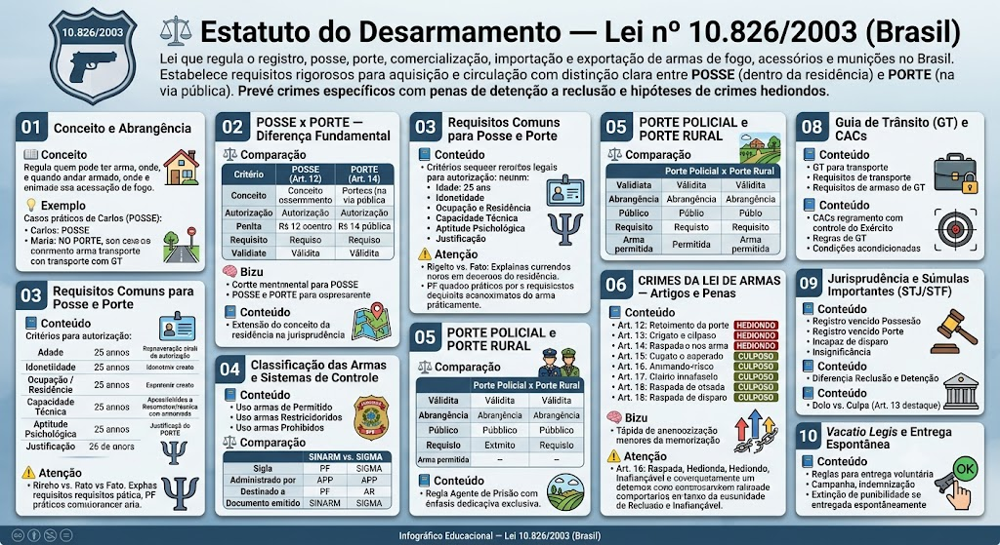

Estatuto do Desarmamento — Lei 10.826/2003
BR / 2026-10-13 / compilada (texto vigente)
Consultar fonte oficial Baixar cópia local
A redação desta cópia corresponde à versão identificada acima. Consulte a fonte oficial para conferir alterações posteriores e o recorte do seu edital.
Roteiro de leitura
- Registro e porte
- Tipos penais
- Fiscalização e disposições gerais
Índice dos 41 dispositivos
Lei nº 10.826 de 22/12/2003
LEI Nº 10.826, DE 22 DE DEZEMBRO DE 2003
Dispõe sobre registro, posse e comercialização de armas de fogo e munição, sobre o Sistema Nacional de Armas - Sinarm, define crimes e dá outras providências.
O PRESIDENTE DA REPÚBLICA
Faço saber que o Congresso Nacional decreta e eu sanciono a seguinte Lei:
CAPÍTULO I — DO SISTEMA NACIONAL DE ARMAS
Art. 1º O Sistema Nacional de Armas - Sinarm, instituído no Ministério da Justiça, no âmbito da Polícia Federal, tem circunscrição em todo o território nacional.
Art. 2º Ao Sinarm compete:
I - identificar as características e a propriedade de armas de fogo, mediante cadastro;
II - cadastrar as armas de fogo produzidas, importadas e vendidas no País;
III - cadastrar as autorizações de porte de arma de fogo e as renovações expedidas pela Polícia Federal;
IV - cadastrar as transferências de propriedade, extravio, furto, roubo e outras ocorrências suscetíveis de alterar os dados cadastrais, inclusive as decorrentes de fechamento de empresas de segurança privada e de transporte de valores;
V - identificar as modificações que alterem as características ou o funcionamento de arma de fogo;
VI - integrar no cadastro os acervos policiais já existentes;
VII - cadastrar as apreensões de armas de fogo, inclusive as vinculadas a procedimentos policiais e judiciais;
VIII - cadastrar os armeiros em atividade no País, bem como conceder licença para exercer a atividade;
IX - cadastrar mediante registro os produtores, atacadistas, varejistas, exportadores e importadores autorizados de armas de fogo, acessórios e munições;
X - cadastrar a identificação do cano da arma, as características das impressões de raiamento e de microestriamento de projétil disparado, conforme marcação e testes obrigatoriamente realizados pelo fabricante;
XI - informar às Secretarias de Segurança Pública dos Estados e do Distrito Federal os registros e autorizações de porte de armas de fogo nos respectivos territórios, bem como manter o cadastro atualizado para consulta.
Parágrafo único. As disposições deste artigo não alcançam as armas de fogo das Forças Armadas e Auxiliares, bem como as demais que constem dos seus registros próprios.
CAPÍTULO II — DO REGISTRO
Art. 3º É obrigatório o registro de arma de fogo no órgão competente.
Parágrafo único. As armas de fogo de uso restrito serão registradas no Comando do Exército, na forma do regulamento desta Lei.
Art. 4º Para adquirir arma de fogo de uso permitido o interessado deverá, além de declarar a efetiva necessidade, atender aos seguintes requisitos: *(Vide ADI nº 6.119/2019)*
I - comprovação de idoneidade, com a apresentação de certidões negativas de antecedentes criminais fornecidas pela Justiça Federal, Estadual, Militar e Eleitoral e de não estar respondendo a inquérito policial ou a processo criminal, que poderão ser fornecidas por meios eletrônicos; *(Inciso com redação dada pela Lei nº 11.706, de 19/6/2008)*
II - apresentação de documento comprobatório de ocupação lícita e de residência certa;
III - comprovação de capacidade técnica e de aptidão psicológica para o manuseio de arma de fogo, atestadas na forma disposta no regulamento desta Lei.
§ 1º O Sinarm expedirá autorização de compra de arma de fogo após atendidos os requisitos anteriormente estabelecidos, em nome do requerente e para a arma indicada, sendo intransferível esta autorização.
§ 2º A aquisição de munição somente poderá ser feita no calibre correspondente à arma registrada e na quantidade estabelecida no regulamento desta Lei. *(Parágrafo com redação dada pela Lei nº 11.706, de 19/6/2008) (Vide ADI nº 6.139/2019 e ADI nº 6.466/2020)*
§ 3º A empresa que comercializar arma de fogo em território nacional é obrigada a comunicar a venda à autoridade competente, como também a manter banco de dados com todas as características da arma e cópia dos documentos previstos neste artigo.
§ 4º A empresa que comercializa armas de fogo, acessórios e munições responde legalmente por essas mercadorias, ficando registradas como de sua propriedade enquanto não forem vendidas.
§ 5º A comercialização de armas de fogo, acessórios e munições entre pessoas físicas somente será efetivada mediante autorização do Sinarm.
§ 6º A expedição da autorização a que se refere o § 1º será concedida, ou recusada com a devida fundamentação, no prazo de 30 (trinta) dias úteis, a contar da data do requerimento do interessado.
§ 7º O registro precário a que se refere o § 4º prescinde do cumprimento dos requisitos dos incisos I, II e III deste artigo.
§ 8º Estará dispensado das exigências constantes do inciso III do *caput* deste artigo, na forma do regulamento, o interessado em adquirir arma de fogo de uso permitido que comprove estar autorizado a portar arma com as mesmas características daquela a ser adquirida. *(Parágrafo acrescido pela Lei nº 11.706, de 19/6/2008)*
Art. 5º O certificado de Registro de Arma de Fogo, com validade em todo o território nacional, autoriza o seu proprietário a manter a arma de fogo exclusivamente no interior de sua residência ou domicílio, ou dependência desses, ou, ainda, no seu local de trabalho, desde que seja ele o titular ou o responsável legal pelo estabelecimento ou empresa. *(“Caput” do artigo com redação dada pela Lei nº 10.884, de 17/6/2004)*
§ 1º O certificado de registro de arma de fogo será expedido pela Polícia Federal e será precedido de autorização do Sinarm.
§ 2º Os requisitos de que tratam os incisos I, II e III do art. 4º deverão ser comprovados periodicamente, em período não inferior a 3 (três) anos, na conformidade do estabelecido no regulamento desta Lei, para a renovação do Certificado de Registro de Arma de Fogo.
§ 3º O proprietário de arma de fogo com certificados de registro de propriedade expedido por órgão estadual ou do Distrito Federal até a data da publicação desta Lei que não optar pela entrega espontânea prevista no art. 32 desta Lei deverá renová-lo mediante o pertinente registro federal, até o dia 31 de dezembro de 2008, ante a apresentação de documento de identificação pessoal e comprovante de residência fixa, ficando dispensado do pagamento de taxas e do cumprimento das demais exigências constantes dos incisos I a III do *caput* do art. 4º desta Lei. *(Parágrafo com redação dada pela Lei nº 11.706, de 19/6/2008) (Prazo prorrogado até 31/12/2009, de acordo com o art. 20 da Lei nº 11.922, de 13/4/2009)*
§ 4º Para fins do cumprimento do disposto no § 3º deste artigo, o proprietário de arma de fogo poderá obter, no Departamento de Polícia Federal, certificado de registro provisório, expedido na rede mundial de computadores - internet, na forma do regulamento e obedecidos os procedimentos a seguir:
I - emissão de certificado de registro provisório pela internet, com validade inicial de 90 (noventa) dias; e
II - revalidação pela unidade do Departamento de Polícia Federal do certificado de registro provisório pelo prazo que estimar como necessário para a emissão definitiva do certificado de registro de propriedade. *(Parágrafo acrescido pela Lei nº 11.706, de 19/6/2008)*
§ 5º Aos residentes em área rural, para os fins do disposto no *caput* deste artigo, considera-se residência ou domicílio toda a extensão do respectivo imóvel rural. *(Parágrafo acrescido pela Lei nº 13.870, de 17/9/2019)*
CAPÍTULO III — DO PORTE
Art. 6º É proibido o porte de arma de fogo em todo o território nacional, salvo para os casos previstos em legislação própria e para:
I - os integrantes das Forças Armadas;
II - os integrantes de órgãos referidos nos incisos I, II, III, IV e V do *caput* do art. 144 da Constituição Federal e os da Força Nacional de Segurança Pública (FNSP); *(Inciso com redação dada pela Lei nº 13.500, de 26/10/2017)*
III - os integrantes das guardas municipais das capitais dos Estados e dos Municípios com mais de 500.000 (quinhentos mil) habitantes, nas condições estabelecidas no regulamento desta Lei; *(Inciso declarado inconstitucional, em controle concentrado, pelo Supremo Tribunal Federal, a fim de invalidar as expressões "das capitais dos Estados" e "com mais de 500.000 (quinhentos mil) habitantes”, pela ADC nº 38/2015, ADI nº 5.538/2016 e ADI nº 5.948/2018, publicadas no DOU de 11/3/2021)*
IV - os integrantes das guardas municipais dos Municípios com mais de 50.000 (cinqüenta mil) e menos de 500.000 (quinhentos mil) habitantes, quando em serviço; *(Inciso com redação dada pela Medida Provisória nº 157, de 23/12/2003,* *convertida na Lei nº 10.867, de 12/5/2004) (Inciso declarado inconstitucional, em controle concentrado, pelo Supremo Tribunal Federal, pela ADC nº 38/2015, ADI nº 5.538/2016 e ADI nº 5.948/2018, publicadas no DOU de 11/3/2021)*
V - os agentes operacionais da Agência Brasileira de Inteligência e os agentes do Departamento de Segurança do Gabinete de Segurança Institucional da Presidência da República;
VI - os integrantes das polícias legislativas referidas no art. 27, § 3º, no art. 51, inciso IV, e no art. 52, inciso XIII, da Constituição Federal; *(Inciso com redação dada pela Lei nº 15.306, de 22/12/2025)*
VII - os integrantes do quadro efetivo dos agentes e guardas prisionais, os integrantes das escoltas de presos e as guardas portuárias;
VIII - as empresas de segurança privada e de transporte de valores constituídas, nos termos desta Lei;
IX - para os integrantes das entidades de desporto legalmente constituídas, cujas atividades esportivas demandem o uso de armas de fogo, na forma do regulamento desta Lei, observando-se, no que couber, a legislação ambiental.
X - integrantes das Carreiras de Auditoria da Receita Federal do Brasil e de Auditoria-Fiscal do Trabalho, cargos de Auditor-Fiscal e Analista Tributário. *(Inciso acrescido pela Lei nº 11.118, de 19/5/2005, e com nova redação dada pela Lei nº 11.501, de 11/7/2007)*
XI - os tribunais do Poder Judiciário descritos no art. 92 da Constituição Federal e os Ministérios Públicos da União e dos Estados, para uso exclusivo de servidores de seus quadros pessoais que efetivamente estejam no exercício de funções de segurança, na forma de regulamento a ser emitido pelo Conselho Nacional de Justiça - CNJ e pelo Conselho Nacional do Ministério Público - CNMP. *(Inciso acrescido pela Lei nº 12.694, de 24/7/2012, publicada no DOU de 25/7/2012, em vigor 90 dias após a publicação)*
§ 1º As pessoas previstas nos incisos I, II, III, V e VI do *caput* deste artigo terão direito de portar arma de fogo de propriedade particular ou fornecida pela respectiva corporação ou instituição, mesmo fora de serviço, nos termos do regulamento desta Lei, com validade em âmbito nacional para aquelas constantes dos incisos I, II, V e VI. *(Parágrafo com redação dada pela Lei nº 11.706, de 19/6/2008)*
§ 1º-A *(Parágrafo acrescido pela Lei nº 11.118, de 19/5/2005,* *e* *revogado pela Lei nº 11.706, de 19/6/2008)*
§ 1º-B. Os integrantes do quadro efetivo de agentes e guardas prisionais poderão portar arma de fogo de propriedade particular ou fornecida pela respectiva corporação ou instituição, mesmo fora de serviço, desde que estejam:
I - submetidos a regime de dedicação exclusiva;
II - sujeitos à formação funcional, nos termos do regulamento; e
III - subordinados a mecanismos de fiscalização e de controle interno. *(Parágrafo acrescido pela Lei nº 12.993, de 17/6/2014)*
§ 1º-C. *(VETADO na Lei nº 12.993, de 17/6/2014)*
§ 2º A autorização para o porte de arma de fogo aos integrantes das instituições descritas nos incisos V, VI, VII e X do *caput* deste artigo está condicionada à comprovação do requisito a que se refere o inciso III do *caput* do art. 4º desta Lei nas condições estabelecidas no regulamento desta Lei. *(Parágrafo com redação dada pela Medida Provisória nº 417, de 31/1/2008,* *convertida na Lei nº 11.706, de 19/6/2008)*
§ 3º A autorização para o porte de arma de fogo das guardas municipais está condicionada à formação funcional de seus integrantes em estabelecimentos de ensino de atividade policial, à existência de mecanismos de fiscalização e de controle interno, nas condições estabelecidas no regulamento desta Lei, observada a supervisão do Ministério da Justiça. *(Parágrafo com redação dada pela Lei nº 10.884, de 17/6/2004)*
§ 4º Os integrantes das Forças Armadas, das polícias federais e estaduais e do Distrito Federal, bem como os militares dos Estados e do Distrito Federal, ao exercerem o direito descrito no art. 4º, ficam dispensados do cumprimento do disposto nos incisos I, II e III do mesmo artigo, na forma do regulamento desta Lei.
§ 5º Aos residentes em áreas rurais, maiores de 25 (vinte e cinco) anos que comprovem depender do emprego de arma de fogo para prover sua subsistência alimentar familiar será concedido pela Polícia Federal o porte de arma de fogo, na categoria caçador para subsistência, de uma arma de uso permitido, de tiro simples, com 1 (um) ou 2 (dois) canos, de alma lisa e de calibre igual ou inferior a 16 (dezesseis), desde que o interessado comprove a efetiva necessidade em requerimento ao qual deverão ser anexados os seguintes documentos: *(Parágrafo com redação dada pela Lei nº 11.706, de 19/6/2008)*
I - documento de identificação pessoal; *(Inciso acrescido pela Lei nº 11.706, de 19/6/2008)*
II - comprovante de residência em área rural; e *(Inciso acrescido pela Lei nº 11.706, de 19/6/2008)*
III - atestado de bons antecedentes. *(Inciso acrescido pela Lei nº 11.706, de 19/6/2008)*
§ 6º O caçador para subsistência que der outro uso à sua arma de fogo, independentemente de outras tipificações penais, responderá, conforme o caso, por porte ilegal ou por disparo de arma de fogo de uso permitido. *(Parágrafo acrescido pela Lei nº 10.867, de 12/5/2004, e com nova redação dada pela Lei nº 11.706, de 19/6/2008)*
§ 7º Aos integrantes das guardas municipais dos Municípios que integram regiões metropolitanas será autorizado porte de arma de fogo, quando em serviço. *(Parágrafo acrescido pela Lei nº 11.706, de 19/6/2008)*
Art. 7º As armas de fogo utilizadas pelos profissionais de segurança privada dos prestadores de serviços de segurança privada e das empresas e dos condomínios edilícios possuidores de serviços orgânicos de segurança privada, constituídas na forma da lei, serão de propriedade, responsabilidade e guarda das respectivas empresas, somente podendo ser utilizadas quando em serviço, devendo essas observarem as condições de uso e de armazenagem estabelecidas pelo órgão competente, sendo o certificado de registro e a autorização de porte expedidos pela Polícia Federal em nome da empresa. *(“Caput” do artigo com redação dada pela Lei nº 14.967, de 9/9/2024)*
§ 1º O proprietário ou diretor responsável de empresa de segurança privada e de transporte de valores responderá pelo crime previsto no parágrafo único do art. 13 desta Lei, sem prejuízo das demais sanções administrativas e civis, se deixar de registrar ocorrência policial e de comunicar à Polícia Federal perda, furto, roubo ou outras formas de extravio de armas de fogo, acessórios e munições que estejam sob sua guarda, nas primeiras 24 (vinte e quatro) horas depois de ocorrido o fato.
§ 2º A empresa de segurança e de transporte de valores deverá apresentar documentação comprobatória do preenchimento dos requisitos constantes do art. 4º desta Lei quanto aos empregados que portarão arma de fogo.
§ 3º A listagem dos empregados das empresas referidas neste artigo deverá ser atualizada semestralmente junto ao Sinarm.
Art. 7º-A. As armas de fogo utilizadas pelos servidores das instituições descritas no inciso XI do art. 6º serão de propriedade, responsabilidade e guarda das respectivas instituições, somente podendo ser utilizadas quando em serviço, devendo estas observar as condições de uso e de armazenagem estabelecidas pelo órgão competente, sendo o certificado de registro e a autorização de porte expedidos pela Polícia Federal em nome da instituição.
§ 1º A autorização para o porte de arma de fogo de que trata este artigo independe do pagamento de taxa.
§ 2º O presidente do tribunal ou o chefe do Ministério Público designará os servidores de seus quadros pessoais no exercício de funções de segurança que poderão portar arma de fogo, respeitado o limite máximo de 50% (cinquenta por cento) do número de servidores que exerçam funções de segurança. *(Expressão “respeitado o limite máximo de 50% (cinquenta por cento) do número de servidores que exerçam funções de segurança” declarada inconstitucional, em controle concentrado, pelo Supremo Tribunal Federal, pela ADI nº 5.157/2014, publicada no DOU de 12/12/2024, p. 3)*
§ 3º O porte de arma pelos servidores das instituições de que trata este artigo fica condicionado à apresentação de documentação comprobatória do preenchimento dos requisitos constantes do art. 4º desta Lei, bem como à formação funcional em estabelecimentos de ensino de atividade policial e à existência de mecanismos de fiscalização e de controle interno, nas condições estabelecidas no regulamento desta Lei.
§ 4º A listagem dos servidores das instituições de que trata este artigo deverá ser atualizada semestralmente no Sinarm.
§ 5º As instituições de que trata este artigo são obrigadas a registrar ocorrência policial e a comunicar à Polícia Federal eventual perda, furto, roubo ou outras formas de extravio de armas de fogo, acessórios e munições que estejam sob sua guarda, nas primeiras 24 (vinte e quatro) horas depois de ocorrido o fato. *(Artigo acrescido pela Lei nº 12.694, de 24/7/2012, publicada no DOU de 25/7/2012, em vigor 90 dias após a publicação)*
Art. 8º As armas de fogo utilizadas em entidades desportivas legalmente constituídas devem obedecer às condições de uso e de armazenagem estabelecidas pelo órgão competente, respondendo o possuidor ou o autorizado a portar a arma pela sua guarda na forma do regulamento desta Lei.
Art. 9º Compete ao Ministério da Justiça a autorização do porte de arma para os responsáveis pela segurança de cidadãos estrangeiros em visita ou sediados no Brasil e, ao Comando do Exército, nos termos do regulamento desta Lei, o registro e a concessão de porte de trânsito de arma de fogo para colecionadores, atiradores e caçadores e de representantes estrangeiros em competição internacional oficial de tiro realizada no território nacional.
Art. 10. A autorização para o porte de arma de fogo de uso permitido, em todo o território nacional, é de competência da Polícia Federal e somente será concedida após autorização do Sinarm.
§ 1º A autorização prevista neste artigo poderá ser concedida com eficácia temporária e territorial limitada, nos termos de atos regulamentares, e dependerá de o requerente:
I - demonstrar a sua efetiva necessidade por exercício de atividade profissional de risco ou de ameaça à sua integridade física; *(Vide ADI nº 6.119/2019)*
II - atender às exigências previstas no art. 4º desta Lei;
III - apresentar documentação de propriedade de arma de fogo, bem como o seu devido registro no órgão competente.
§ 2º A autorização de porte de arma de fogo, prevista neste artigo, perderá automaticamente sua eficácia caso o portador dela seja detido ou abordado em estado de embriaguez ou sob efeito de substâncias químicas ou alucinógenas.
Art. 11. Fica instituída a cobrança de taxas, nos valores constantes do Anexo desta Lei, pela prestação de serviços relativos:
I - ao registro de arma de fogo;
II - à renovação de registro de arma de fogo;
III - à expedição de segunda via de registro de arma de fogo;
IV - à expedição de porte federal de arma de fogo;
V - à renovação de porte de arma de fogo;
VI - à expedição de segunda via de porte federal de arma de fogo.
§ 1º Os valores arrecadados destinam-se ao custeio e à manutenção das atividades do Sinarm, da Polícia Federal e do Comando do Exército, no âmbito de suas respectivas responsabilidades.
§ 2º São isentas do pagamento das taxas previstas neste artigo as pessoas e as instituições a que se referem os incisos I a VII e X e o § 5º do art. 6º desta Lei. *(Parágrafo com redação dada pela Medida Provisória nº 417, de 31/1/2008,* *convertida na Lei nº 11.706, de 19/6/2008)*
Art. 11-A. O Ministério da Justiça disciplinará a forma e as condições do credenciamento de profissionais pela Polícia Federal para comprovação da aptidão psicológica e da capacidade técnica para o manuseio de arma de fogo.
§ 1º Na comprovação da aptidão psicológica, o valor cobrado pelo psicólogo não poderá exceder ao valor médio dos honorários profissionais para realização de avaliação psicológica constante do item 1.16 da tabela do Conselho Federal de Psicologia.
§ 2º Na comprovação da capacidade técnica, o valor cobrado pelo instrutor de armamento e tiro não poderá exceder R$ 80,00 (oitenta reais), acrescido do custo da munição.
§ 3º A cobrança de valores superiores aos previstos nos §§ 1º e 2º deste artigo implicará o descredenciamento do profissional pela Polícia Federal. *(Artigo acrescido pela Medida Provisória nº 417, de 31/1/2008,* *convertida e com redação dada pela Lei nº 11.706, de 19/6/2008)*
CAPÍTULO IV — DOS CRIMES E DAS PENAS
Posse irregular de arma de fogo de uso permitido
Art. 12. Possuir ou manter sob sua guarda arma de fogo, acessório ou munição, de uso permitido, em desacordo com determinação legal ou regulamentar, no interior de sua residência ou dependência desta, ou, ainda no seu local de trabalho, desde que seja o titular ou o responsável legal do estabelecimento ou empresa:
Pena - detenção, de 1 (um) a 3 (três) anos, e multa.
Omissão de cautela
Art. 13. Deixar de observar as cautelas necessárias para impedir que menor de 18 (dezoito) anos ou pessoa portadora de deficiência mental se apodere de arma de fogo que esteja sob sua posse ou que seja de sua propriedade:
Pena - detenção, de 1 (um) a 2 (dois) anos, e multa.
Parágrafo único. Nas mesmas penas incorrem o proprietário ou diretor responsável de empresa de segurança e transporte de valores que deixarem de registrar ocorrência policial e de comunicar à Polícia Federal perda, furto, roubo ou outras formas de extravio de arma de fogo, acessório ou munição que estejam sob sua guarda, nas primeiras 24 (vinte quatro) horas depois de ocorrido o fato.
Porte ilegal de arma de fogo de uso permitido
Art. 14. Portar, deter, adquirir, fornecer, receber, ter em depósito, transportar, ceder, ainda que gratuitamente, emprestar, remeter, empregar, manter sob guarda ou ocultar arma de fogo, acessório ou munição, de uso permitido, sem autorização e em desacordo com determinação legal ou regulamentar:
Pena - reclusão, de 2 (dois) a 4 (quatro) anos, e multa.
Parágrafo único. O crime previsto neste artigo é inafiançável, salvo quando a arma de fogo estiver registrada em nome do agente. *(Parágrafo único declarado inconstitucional, em controle concentrado, pelo Supremo Tribunal Federal, pela ADIn nº 3.112-1, publicada no DOU de 10/5/2007)*
Disparo de arma de fogo
Art. 15. Disparar arma de fogo ou acionar munição em lugar habitado ou em suas adjacências, em via pública ou em direção a ela, desde que essa conduta não tenha como finalidade a prática de outro crime:
Pena - reclusão, de 2 (dois) a 4 (quatro) anos, e multa.
Parágrafo único. O crime previsto neste artigo é inafiançável. *(Parágrafo único declarado inconstitucional, em controle concentrado, pelo Supremo Tribunal Federal, pela ADIn nº 3.112-1, publicada no DOU de 10/5/2007)*
Posse ou porte ilegal de arma de fogo de uso restrito
Art. 16. Possuir, deter, portar, adquirir, fornecer, receber, ter em depósito, transportar, ceder, ainda que gratuitamente, emprestar, remeter, empregar, manter sob sua guarda ou ocultar arma de fogo, acessório ou munição de uso restrito, sem autorização e em desacordo com determinação legal ou regulamentar: *(“Caput” do artigo com redação dada pela Lei nº 13.964, de 24/12/2019, publicada na Edição Extra do DOU de 24/12/2019, em vigor 30 dias após a publicação)*
Pena - reclusão, de 3 (três) a 6 (seis) anos, e multa.
§ 1º Nas mesmas penas incorre quem: *(Parágrafo único transformado em § 1º pela Lei nº 13.964, de 24/12/2019, publicada na Edição Extra do DOU de 24/12/2019, em vigor 30 dias após a publicação)*
I - suprimir ou alterar marca, numeração ou qualquer sinal de identificação de arma de fogo ou artefato;
II - modificar as características de arma de fogo, de forma a torná-la equivalente a arma de fogo de uso proibido ou restrito ou para fins de dificultar ou de qualquer modo induzir a erro autoridade policial, perito ou juiz;
III - possuir, detiver, fabricar ou empregar artefato explosivo ou incendiário, sem autorização ou em desacordo com determinação legal ou regulamentar;
IV - portar, possuir, adquirir, transportar ou fornecer arma de fogo com numeração, marca ou qualquer outro sinal de identificação raspado, suprimido ou adulterado;
V - vender, entregar ou fornecer, ainda que gratuitamente, arma de fogo, acessório, munição ou explosivo a criança ou adolescente; e
VI - produzir, recarregar ou reciclar, sem autorização legal, ou adulterar, de qualquer forma, munição ou explosivo.
§ 2º Se as condutas descritas no *caput* e no § 1º deste artigo envolverem arma de fogo de uso proibido, a pena é de reclusão, de 4 (quatro) a 12 (doze) anos. *(Parágrafo acrescido pela Lei nº 13.964, de 24/12/2019, publicada na Edição Extra do DOU de 24/12/2019, em vigor 30 dias após a publicação)*
Comércio ilegal de arma de fogo
Art. 17. Adquirir, alugar, receber, transportar, conduzir, ocultar, ter em depósito, desmontar, montar, remontar, adulterar, vender, expor à venda, ou de qualquer forma utilizar, em proveito próprio ou alheio, no exercício de atividade comercial ou industrial, arma de fogo, acessório ou munição, sem autorização ou em desacordo com determinação legal ou regulamentar:
Pena - reclusão, de 6 (seis) a 12 (doze) anos, e multa. *(Pena com redação dada pela Lei nº 13.964, de 24/12/2019, publicada na Edição Extra do DOU de 24/12/2019, em vigor 30 dias após a publicação)*
§ 1º Equipara-se à atividade comercial ou industrial, para efeito deste artigo, qualquer forma de prestação de serviços, fabricação ou comércio irregular ou clandestino, inclusive o exercido em residência. *(Parágrafo único transformado em § 1º pela Lei nº 13.964, de 24/12/2019, publicada na Edição Extra do DOU de 24/12/2019, em vigor 30 dias após a publicação)*
§ 2º Incorre na mesma pena quem vende ou entrega arma de fogo, acessório ou munição, sem autorização ou em desacordo com a determinação legal ou regulamentar, a agente policial disfarçado, quando presentes elementos probatórios razoáveis de conduta criminal preexistente. *(Parágrafo acrescido pela Lei nº 13.964, de 24/12/2019, publicada na Edição Extra do DOU de 24/12/2019, em vigor 30 dias após a publicação)*
Tráfico internacional de arma de fogo
Art. 18. Importar, exportar, favorecer a entrada ou saída do território nacional, a qualquer título, de arma de fogo, acessório ou munição, sem autorização da autoridade competente:
Pena - reclusão, de 8 (oito) a 16 (dezesseis) anos, e multa. *(Pena com redação dada pela Lei nº 13.964, de 24/12/2019, publicada na Edição Extra do DOU de 24/12/2019, em vigor 30 dias após a publicação)*
Parágrafo único. Incorre na mesma pena quem vende ou entrega arma de fogo, acessório ou munição, em operação de importação, sem autorização da autoridade competente, a agente policial disfarçado, quando presentes elementos probatórios razoáveis de conduta criminal preexistente. *(Parágrafo único acrescido pela Lei nº 13.964, de 24/12/2019, publicada na Edição Extra do DOU de 24/12/2019, em vigor 30 dias após a publicação)*
Art. 19. Nos crimes previstos nos arts. 17 e 18, a pena é aumentada da metade se a arma de fogo, acessório ou munição forem de uso proibido ou restrito.
Art. 20. Nos crimes previstos nos arts. 14, 15, 16, 17 e 18, a pena é aumentada da metade se: *(“Caput” do artigo com redação dada pela Lei nº 13.964, de 24/12/2019, publicada na Edição Extra do DOU de 24/12/2019, em vigor 30 dias após a publicação)*
I - forem praticados por integrante dos órgãos e empresas referidas nos arts. 6º, 7º e 8º desta Lei; ou *(Inciso acrescido pela Lei nº 13.964, de 24/12/2019, publicada na Edição Extra do DOU de 24/12/2019, em vigor 30 dias após a publicação)*
II - o agente for reincidente específico em crimes dessa natureza. *(Inciso acrescido pela Lei nº 13.964, de 24/12/2019, publicada na Edição Extra do DOU de 24/12/2019, em vigor 30 dias após a publicação)*
Art. 21. Os crimes previstos nos arts. 16, 17 e 18 são insuscetíveis de liberdade provisória. *(Artigo declarado inconstitucional, em controle concentrado, pelo Supremo Tribunal Federal, pela ADIn nº 3.112-1, publicada no DOU de 10/5/2007)*
Art. 21-A. Nos crimes previstos nos arts. 12, 14 e 16 desta Lei, a pena é aumentada de 2/3 (dois terços) se o crime for praticado em concurso com crime previsto na Lei nº 11.343, de 23 de agosto de 2006, estiver diretamente ligado ao comércio ilícito de entorpecentes ou o artefato tiver sido utilizado para assegurar o sucesso da mercancia. *(Artigo acrescido pela Lei nº 15.358, de 24/3/2026)*
CAPÍTULO V — DISPOSIÇÕES GERAIS
Art. 22. O Ministério da Justiça poderá celebrar convênios com os Estados e o Distrito Federal para o cumprimento do disposto nesta Lei.
Art. 23. A classificação legal, técnica e geral bem como a definição das armas de fogo e demais produtos controlados, de usos proibidos, restritos, permitidos ou obsoletos e de valor histórico serão disciplinadas em ato do chefe do Poder Executivo Federal, mediante proposta do Comando do Exército. *(“Caput” do artigo com redação dada pela Lei nº 11.706, de 19/6/2008)*
§ 1º Todas as munições comercializadas no País deverão estar acondicionadas em embalagens com sistema de código de barras, gravado na caixa, visando possibilitar a identificação do fabricante e do adquirente, entre outras informações definidas pelo regulamento desta Lei.
§ 2º Para os órgãos referidos no art. 6º, somente serão expedidas autorizações de compra de munição com identificação do lote e do adquirente no culote dos projéteis, na forma do regulamento desta Lei.
§ 3º As armas de fogo fabricadas a partir de 1 (um) ano da data de publicação desta Lei conterão dispositivo intrínseco de segurança e de identificação, gravado no corpo da arma, definido pelo regulamento desta Lei, exclusive para os órgãos previstos no art. 6º.
§ 4º As instituições de ensino policial, as guardas municipais referidas no inciso III do *caput* do art. 6º e no seu § 7º e as escolas de formação de profissionais de segurança privada poderão adquirir insumos e máquinas de recarga de munição para o fim exclusivo de suprimento de suas atividades, mediante autorização concedida nos termos do regulamento. *(Parágrafo acrescido pela Medida Provisória nº 417, de 31/1/2008,* *convertida na Lei nº 11.706, de 19/6/2008,* *e com redação dada pela Lei nº 14.967, de 9/9/2024)*
Art. 24. Excetuadas as atribuições a que se refere o art. 2º desta Lei, compete ao Comando do Exército autorizar e fiscalizar a produção, exportação, importação, desembaraço alfandegário e o comércio de armas de fogo e demais produtos controlados, inclusive o registro e o porte de trânsito de arma de fogo de colecionadores, atiradores e caçadores.
Art. 25. As armas de fogo apreendidas, após a elaboração do laudo pericial e sua juntada aos autos, quando não mais interessarem à persecução penal serão encaminhadas pelo juiz competente ao Comando do Exército, no prazo de até 48 (quarenta e oito) horas, para destruição ou doação aos órgãos de segurança pública ou às Forças Armadas, na forma do regulamento desta Lei. *(“Caput” do artigo com redação dada pela Lei nº 13.886, de 17/10/2019)*
§ 1º As armas de fogo encaminhadas ao Comando do Exército que receberem parecer favorável à doação, obedecidos o padrão e a dotação de cada Força Armada ou órgão de segurança pública, atendidos os critérios de prioridade estabelecidos pelo Ministério da Justiça e ouvido o Comando do Exército, serão arroladas em relatório reservado trimestral a ser encaminhado àquelas instituições, abrindo-se-lhes prazo para manifestação de interesse. *(Parágrafo único transformado em § 1º e com nova redação dada pela Lei nº 11.706, de 19/6/2008)*
§ 1º-A. As armas de fogo e munições apreendidas em decorrência do tráfico de drogas de abuso, ou de qualquer forma utilizadas em atividades ilícitas de produção ou comercialização de drogas abusivas, ou, ainda, que tenham sido adquiridas com recursos provenientes do tráfico de drogas de abuso, perdidas em favor da União e encaminhadas para o Comando do Exército, devem ser, após perícia ou vistoria que atestem seu bom estado, destinadas com prioridade para os órgãos de segurança pública e do sistema penitenciário da unidade da federação responsável pela apreensão. *(Parágrafo acrescido pela Lei nº 13.886, de 17/10/2019)*
§ 2º O Comando do Exército encaminhará a relação das armas a serem doadas ao juiz competente, que determinará o seu perdimento em favor da instituição beneficiada. *(Parágrafo acrescido pela Lei nº 11.706, de 19/6/2008)*
§ 3º O transporte das armas de fogo doadas será de responsabilidade da instituição beneficiada, que procederá ao seu cadastramento no Sinarm ou no Sigma. *(Parágrafo acrescido pela Lei nº 11.706, de 19/6/2008)*
§ 4º *(VETADO na Lei nº 11.706, de 19/6/2008)*
§ 5º O Poder Judiciário instituirá instrumentos para o encaminhamento ao Sinarm ou ao Sigma, conforme se trate de arma de uso permitido ou de uso restrito, semestralmente, da relação de armas acauteladas em juízo, mencionando suas características e o local onde se encontram. *(Parágrafo acrescido pela Lei nº 11.706, de 19/6/2008)*
Art. 26. São vedadas a fabricação, a venda, a comercialização e a importação de brinquedos, réplicas e simulacros de armas de fogo, que com estas se possam confundir.
Parágrafo único. Excetuam-se da proibição as réplicas e os simulacros destinados à instrução, ao adestramento, ou à coleção de usuário autorizado, nas condições fixadas pelo Comando do Exército.
Art. 27. Caberá ao Comando do Exército autorizar, excepcionalmente, a aquisição de armas de fogo de uso restrito. *(Vide ADI nº 6.119/2019)*
Parágrafo único. O disposto neste artigo não se aplica às aquisições dos Comandos Militares.
Art. 28. É vedado ao menor de 25 (vinte e cinco) anos adquirir arma de fogo, ressalvados os integrantes das entidades constantes dos incisos I, II, III, V, VI, VII e X do *caput* do art. 6º desta Lei. *(Artigo com redação dada pela Medida Provisória nº 417, de 31/1/2008,* *convertida na Lei nº 11.706, de 19/6/2008)*
Art. 29. As autorizações de porte de armas de fogo já concedidas expirar-se-ão 90 (noventa) dias após a publicação desta Lei. *(Vide Lei nº 10.884, de 17/6/2004)*
Parágrafo único. O detentor de autorização com prazo de validade superior a 90 (noventa) dias poderá renová-la, perante a Polícia Federal, nas condições dos arts. 4º, 6º e 10 desta Lei, no prazo de 90 (noventa) dias após sua publicação, sem ônus para o requerente.
Art. 30. Os possuidores e proprietários de arma de fogo de uso permitido ainda não registrada deverão solicitar seu registro até o dia 31 de dezembro de 2008, mediante apresentação de documento de identificação pessoal e comprovante de residência fixa, acompanhados de nota fiscal de compra ou comprovação da origem lícita da posse, pelos meios de prova admitidos em direito, ou declaração firmada na qual constem as características da arma e a sua condição de proprietário, ficando este dispensado do pagamento de taxas e do cumprimento das demais exigências constantes dos incisos I a III do *caput* do art. 4º desta Lei. *(“Caput” do artigo com redação dada pela Lei nº 11.706, de 19/6/2008)* *(Prazo prorrogado até 31/12/2009, de acordo com o art. 20 da Lei nº 11.922, de 13/4/2009)*
Parágrafo único. Para fins do cumprimento do disposto no *caput* deste artigo, o proprietário de arma de fogo poderá obter, no Departamento de Polícia Federal, certificado de registro provisório, expedido na forma do § 4º do art. 5º desta Lei. *(Parágrafo único acrescido pela Lei nº 11.706, de 19/6/2008)*
Art. 31. Os possuidores e proprietários de armas de fogo adquiridas regularmente poderão, a qualquer tempo, entregá-las à Polícia Federal, mediante recibo e indenização, nos termos do regulamento desta Lei.
Art. 32. Os possuidores e proprietários de arma de fogo poderão entregá-la, espontaneamente, mediante recibo, e, presumindo- se de boa-fé, serão indenizados, na forma do regulamento, ficando extinta a punibilidade de eventual posse irregular da referida arma. *(“Caput” do artigo com redação dada pela Lei nº 11.706, de 19/6/2008)*
Parágrafo único. *(Revogado pela Lei nº 11.706, de 19/6/2008)*
Art. 33. Será aplicada multa de R$ 100.000,00 (cem mil reais) a R$ 300.000,00 (trezentos mil reais), conforme especificar o regulamento desta Lei:
I - à empresa de transporte aéreo, rodoviário, ferroviário, marítimo, fluvial ou lacustre que deliberadamente, por qualquer meio, faça, promova, facilite ou permita o transporte de arma ou munição sem a devida autorização ou com inobservância das normas de segurança;
II - à empresa de produção ou comércio de armamentos que realize publicidade para venda, estimulando o uso indiscriminado de armas de fogo, exceto nas publicações especializadas.
Art. 34. Os promotores de eventos em locais fechados, com aglomeração superior a 1000 (um mil) pessoas, adotarão, sob pena de responsabilidade, as providências necessárias para evitar o ingresso de pessoas armadas, ressalvados os eventos garantidos pelo inciso VI do art. 5º da Constituição Federal.
Parágrafo único. As empresas responsáveis pela prestação dos serviços de transporte internacional e interestadual de passageiros adotarão as providências necessárias para evitar o embarque de passageiros armados.
Art. 34-A. Os dados relacionados à coleta de registros balísticos serão armazenados no Banco Nacional de Perfis Balísticos.
§ 1º O Banco Nacional de Perfis Balísticos tem como objetivo cadastrar armas de fogo e armazenar características de classe e individualizadoras de projéteis e de estojos de munição deflagrados por arma de fogo.
§ 2º O Banco Nacional de Perfis Balísticos será constituído pelos registros de elementos de munição deflagrados por armas de fogo relacionados a crimes, para subsidiar ações destinadas às apurações criminais federais, estaduais e distritais.
§ 3º O Banco Nacional de Perfis Balísticos será gerido pela unidade oficial de perícia criminal.
§ 4º Os dados constantes do Banco Nacional de Perfis Balísticos terão caráter sigiloso, e aquele que permitir ou promover sua utilização para fins diversos dos previstos nesta Lei ou em decisão judicial responderá civil, penal e administrativamente.
§ 5º É vedada a comercialização, total ou parcial, da base de dados do Banco Nacional de Perfis Balísticos.
§ 6º A formação, a gestão e o acesso ao Banco Nacional de Perfis Balísticos serão regulamentados em ato do Poder Executivo federal. *(Artigo acrescido pela Lei nº 13.964, de 24/12/2019, publicada na Edição Extra do DOU de 24/12/2019, em vigor 30 dias após a publicação)*
CAPÍTULO VI — DISPOSIÇÕES FINAIS
Art. 35. É proibida a comercialização de arma de fogo e munição em todo o território nacional, salvo para as entidades previstas no art. 6º desta Lei.
§ 1º Este dispositivo, para entrar em vigor, dependerá de aprovação mediante referendo popular, a ser realizado em outubro de 2005.
§ 2º Em caso de aprovação do referendo popular, o disposto neste artigo entrará em vigor na data de publicação de seu resultado pelo Tribunal Superior Eleitoral.
Art. 36. É revogada a Lei nº 9.437, de 20 de fevereiro de 1997.
Art. 37. Esta Lei entra em vigor na data de sua publicação.
Brasília, 22 de dezembro de 2003; 182º da Independência e 115º da República.
LUIZ INÁCIO LULA DA SILVA
Márcio Thomaz Bastos
José Viegas Filho
Marina Silva
ANEXO
TABELA DE TAXAS
*(Anexo com redação dada pelo Anexo à Lei nº 11.706, de 19/6/2008)*
ATO ADMINISTRATIVO
R$
I - Registro de arma de fogo:
\- até 31 de dezembro de 2008
\- a partir de 1º de janeiro de 2009
Gratuito (art. 30)
60,00
II - Renovação de certificado de registro de arma de fogo:
\- até 31 de dezembro de 2008
\- a partir de 1º de janeiro de 2009
Gratuito (art. 5º, § 3º)
60,00
III - Registro de arma de fogo para empresa de segurança privada e de transporte de valores
60,00
IV - Renovação do certificado de registro de arma de fogo para empresa de segurança privada e de transporte de valores
\- até 30 de junho de 2008
\- de 1º de julho de 2008 a 31 de outubro de 2008
\- a partir de 1º de novembro de 2008
30,00
45,00
60,00
V - Expedição de porte de arma de fogo
1.000,00
VI - Renovação de porte de arma de fogo
1.000,00
VII - Expedição de segunda via de registro de arma de fogo
60,00
VIII - Expedição de segunda via de porte de arma de fogo
60,00
Material de estudo: Lei nº 10.826/2003 — Estatuto do Desarmamento
Material complementar · Ver fonte no GitHub
Conceito e Abrangência
O que é o Estatuto do Desarmamento
A Lei nº 10.826/2003, conhecida como Estatuto do Desarmamento, regula quem pode ter arma, onde pode guardar e em quais situações pode andar armado no Brasil. A regra geral é: ter arma em casa (posse) é difícil mas possível; andar armado na rua (porte) é exceção, só para casos muito específicos.
Situação prática
Carlos tem 30 anos, fez curso de tiro, passou no teste psicológico e conseguiu registro da PF para manter uma pistola dentro de casa (POSSE). Já Maria não conseguiu o PORTE porque não comprovou risco profissional real — ela só pode transportar a arma desmuniciada e lacrada até o clube de tiro, com Guia de Trânsito.
POSSE x PORTE — Diferença Fundamental
Quadro comparativo: Posse x Porte
| Critério | POSSE (Art. 12) | PORTE (Art. 14) |
|---|---|---|
| Conceito | Ter arma DENTRO de casa ou local de trabalho (se for o responsável ou dono da empresa) | Andar armado FORA de casa (transporte/uso na rua) |
| Autorização | Polícia Federal (SINARM) — CRAF | Polícia Federal (excepcional, discricionária) |
| Pena ilegal | Detenção de 1 a 3 anos + multa | Reclusão de 2 a 4 anos + multa |
| Exigência principal | Efetiva necessidade (comprovação de interesse legítimo) | Comprovação de RISCO REAL (mais rigoroso) |
| Validade | 5 anos | 5 anos |
Gatilho mental
📌 Posse = arma FICA em local fechado (residência/comércio). Pena MENOR (detenção).
📌 Porte = arma ACOMPANHA a pessoa na rua. Pena MAIOR (reclusão).
Extensão do conceito de 'residência' (jurisprudência)
O conceito de residência abrange todo o perímetro da propriedade privada (quintal, chácara anexa, escritório no mesmo terreno). Transportar a arma do quarto para o quintal (dentro da propriedade) NÃO configura porte ilegal — ainda está no âmbito da posse. O porte só se configura quando a arma sai para a via pública sem Guia de Trânsito ou autorização.
Requisitos Comuns para Posse e Porte
Requisitos legais
Para obter autorização de posse ou porte, o interessado deve preencher os seguintes requisitos (Art. 6º, caput e incisos):
- 1. Idade mínima: 25 anos.
- 2. Idoneidade: certidões negativas (federal, estadual, eleitoral, militar).
- 3. Ocupação lícita + residência fixa.
- 4. Capacidade técnica: curso e teste de tiro.
- 5. Aptidão psicológica: laudo de psicólogo credenciado (validade ≤ 1 ano).
- 6. Justificativa de efetiva necessidade (mais rigorosa para porte).
Direito vs. Fato
A lei permite a posse, mas na prática a PF exige 'efetiva necessidade' — não basta apenas o desejo de autodefesa. O porte é ainda mais restrito, geralmente concedido a quem comprova risco profissional real, como agentes de segurança ou residentes em áreas rurais isoladas.
Classificação das Armas e Sistemas de Controle
Tipos de armas
A lei classifica as armas em três categorias:
- Uso Permitido: civis que preencham requisitos (defesa pessoal, caça, tiro esportivo).
- Uso Restrito: forças de segurança, CACs autorizados (armas automáticas, certos calibres).
- Uso Proibido: ninguém (exceto autorizações excepcionais para algumas armas de guerra).
SINARM x SIGMA
| Critério | SINARM | SIGMA |
|---|---|---|
| Sigla | Sistema Nacional de Armas | Sistema de Gerenciamento Militar |
| Administrado por | Polícia Federal | Exército Brasileiro |
| Destinado a | Armas de USO PERMITIDO (civis) | Armas de USO RESTRITO / militar / CACs |
| Documento emitido | CRAF (Certificado de Registro) | Registro próprio do Exército |
PORTE POLICIAL e PORTE RURAL
Porte Policial x Porte Rural
| Critério | Porte Policial (Institucional) | Porte Rural (Caçador de Subsistência) |
|---|---|---|
| Validade | Indeterminada | 5 anos (renovável) |
| Abrangência | Nacional | Local (área rural onde reside) |
| Público | Policiais federais, civis, militares, rodoviários, ferroviários (em serviço ou autorizados). Guarda Municipal tem porte institucional com limitações. | Residentes em área rural com 25 anos ou mais |
| Requisito principal | Integrante das forças de segurança (Art. 144 da CF) com dedicação exclusiva (para agentes prisionais). | DEPENDER da arma para subsistência alimentar da família |
| Arma permitida | Armas institucionais (conforme regulamento) | Tiro simples, 1 ou 2 canos, calibre até 16, alma lisa |
Agente Prisional e Porte
O agente prisional tem direito ao porte apenas se tiver dedicação exclusiva ao cargo. Se não houver dedicação exclusiva, NÃO tem direito ao porte institucional. Essa regra é frequentemente cobrada em provas.
CRIMES DA LEI DE ARMAS — Artigos e Penas
Rol de crimes
A lei prevê os seguintes crimes, com penas específicas:
- Art. 12 — Posse irregular (uso permitido): detenção de 1 a 3 anos + multa.
- Art. 13 — Omissão de cautela (arma acessada por menor/incapaz): detenção de 1 a 2 anos (crime CULPOSO).
- Art. 14 — Porte ilegal (uso permitido): reclusão de 2 a 4 anos + multa.
- Art. 15 — Disparo de arma de fogo: reclusão de 2 a 4 anos + multa.
- Art. 16 — Posse/porte de arma de uso restrito ou com numeração raspada/suprimida/adulterada: reclusão de 3 a 6 anos + multa (crime HEDIONDO).
- Art. 17 — Comércio ilegal de arma: reclusão de 4 a 8 anos (crime HEDIONDO).
- Art. 18 — Tráfico internacional de arma: reclusão de 8 a 15 anos (crime HEDIONDO).
Memorização rápida
📌 CULPOSO → só o Art. 13 (omissão de cautela).
📌 HEDIONDOS → Arts. 16, 17 e 18.
📌 Os demais → dolosos comuns.
Arma com numeração raspada (Art. 16)
A posse ou porte de arma com numeração raspada, suprimida ou adulterada é conduta equiparada a crime de uso restrito, mesmo que a arma originalmente fosse de uso permitido. Pena: reclusão de 3 a 6 anos + multa. É crime inafiançável (a fiança não pode ser concedida na delegacia) e hediondo.
Diferença prática entre posse irregular e porte ilegal
Embora ambos sejam crimes, a distinção é essencial para concurso:
Posse irregular (art. 12): arma dentro de residência ou local de trabalho (se for o proprietário ou responsável). Pena: detenção de 1 a 3 anos + multa. É cabível fiança (valor fixado pelo juiz).
Porte ilegal (art. 14): arma fora desses locais, na via pública ou em transporte. Pena: reclusão de 2 a 4 anos + multa. Não cabe fiança (art. 14, §1º).
Crimes hediondos equiparados:
- Art. 16 (posse/porte de arma de uso restrito ou com numeração raspada/adulterada): reclusão de 3 a 6 anos + multa – inafiançável e equiparado a hediondo.
- Art. 17 (comércio ilegal de arma): reclusão de 4 a 8 anos – hediondo.
- Art. 18 (tráfico internacional de arma): reclusão de 8 a 15 anos – hediondo.
📌 Pegadinha: o crime do art. 16 é hediondo mesmo que a arma seja de uso permitido, se tiver numeração suprimida/adulterada.
Aumento de Pena e Causas de Agravação
Hipóteses de aumento (até 50%)
A pena pode ser aumentada em até 50% (metade) nas seguintes hipóteses:
- Uso de arma de uso restrito ou proibido.
- Reincidência específica (já condenado por crime da Lei de Armas).
- Associação criminosa ou risco agravado (ex.: uso em contexto de organização criminosa).
Guia de Trânsito (GT) e CACs
Guia de Trânsito
A Guia de Trânsito é necessária para o transporte de arma entre locais (residência, clube de tiro, estande, etc.). A arma deve estar desmuniciada, acondicionada em estojo ou caixa, com a rota definida. Desviar da rota ou transportar a arma pronta para uso fora do local autorizado configura crime de porte ilegal (Art. 14 ou Art. 16).
Colecionadores, Atiradores e Caçadores (CACs)
Os CACs possuem regramento próprio fiscalizado pelo Exército Brasileiro (SIGMA). O deslocamento da arma do acervo até o local de tiro/caça exige a Guia de Tráfego válida, emitida pelo Exército. O atirador desportivo ou caçador possui o direito de transitar com a arma desde que:
- Esteja com a Guia de Tráfego válida.
- A arma esteja acondicionada e desmuniciada.
- Não haja desvio da rota autorizada.
Jurisprudência e Súmulas Importantes (STJ/STF)
Entendimentos consolidados
Os tribunais superiores já pacificaram os seguintes entendimentos:
- Registro vencido + POSSE em casa → atípico (mera irregularidade administrativa).
- Registro vencido + PORTE na rua → crime (Art. 14 ou 16).
- Arma incapaz de disparo (totalmente quebrada) → crime impossível (atípico).
- Princípio da insignificância → aplicável a pequena quantidade de munição (caso a caso).
Reclusão x Detenção — Diferença
Reclusão: pena MAIS GRAVE → pode iniciar em regime fechado.
Detenção: pena MAIS LEVE → NÃO inicia em regime fechado.
Prisão: termo genérico (flagrante, preventiva, etc.).
Dolo x Culpa
Dolo: intenção ou assunção do risco (ex.: porte consciente sem autorização).
Culpa: descuido, negligência, imprudência (ex.: disparo acidental por falta de cuidado). O Art. 13 é o único crime culposo do Estatuto.
Vacatio Legis e Entrega Espontânea
Entrega voluntária de armas
A lei previu regras de regularização e entrega espontânea de armas à Polícia Federal, com extinção da punibilidade para quem entregasse voluntariamente a arma (campanhas de desarmamento e indenização). A entrega espontânea na delegacia/PF afasta a tipicidade penal da posse irregular, desde que feita antes de uma apreensão ou flagrante.
Mapa-mental
Mapa-mental
